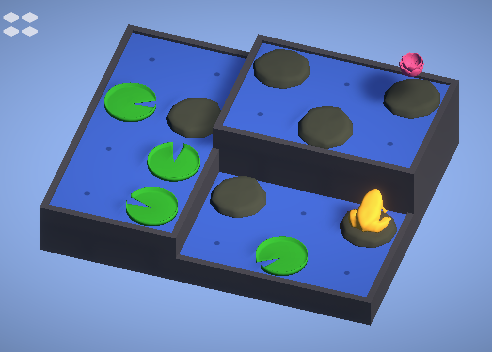
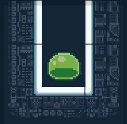

Pondside
A pond-based puzzle game. Highly reccomended!
I'm Leif Schaumann, a human. I'm interested in math, game development, and music, among other things! This website showcases some of the stuff I have worked on.
Currently I am working towards a PhD in mathematics at Cornell University. My research area will likely be in geometric group theory.
Pictured to the right is me at Ithaca Falls, and pictured below is my back yard.
Here are some of the more complete games I have worked on over the years. They are mostly developed in Unity and hosted on Itch.io. Some of them have instructions in the game description on Itch, rather than inside the game itself. Enjoy!

A pond-based puzzle game. Highly reccomended!

A fast paced puzzle/arcade hybrid inspired by Labyrinth.
Mischevious puzzle game and winner in the Cornell DGA 2025 October Game Jam!
Work in progress! Check back later.
Schaumann, L. (2024) Generalized results on the convergence of Thue-Morse turtle curves. Preprint, arXiv:2412.06183.
Bispels, Chris & Cohen, Matthew & Harrington, Joshua & Lowrance, Joshua & Pontes, Kaelyn & Schaumann, Leif & Wong, Wing Hong Tony. (2026). On Sierpiński and Riesel repdigits and repintegers. Integers. 26. A12. 10.5281/zenodo.18154168.
Kipe, M., Pezzimenti, S., Schaumann, L., Ta, L., Wong, Wing Hong Tony. (2025). Bounds on the mosaic number of Legendrian knots. Journal of Knot Theory and Its Ramifications. 34. 10.1142/S0218216525500555.